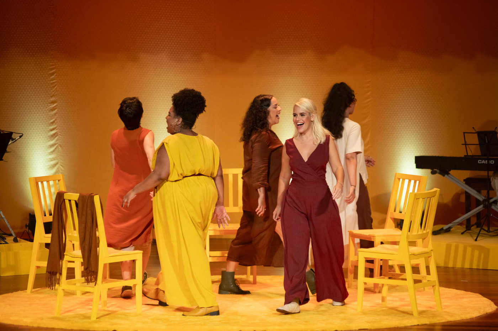

Por Elas: Um musical sobre a força do canto feminino

“Por Elas” une talento e diversidade em um espetáculo emocionante que homenageia a força e o legado das mulheres através da música e da dança.
A partir do dia 1º de novembro, o público paulistano terá a oportunidade de se emocionar com o musical Por Elas, que celebra a força e a coragem do canto feminino. A produção convida os espectadores a refletir sobre as diversas vozes que habitam cada mulher e as histórias impactantes que elas carregam. Com um elenco talentoso e uma proposta poderosa, o espetáculo promete ser uma homenagem às mulheres que marcaram gerações e continuam a inspirar com sua presença e legado.
Por Elas apresenta uma narrativa que destaca a diversidade e a complexidade da experiência feminina, levantando questões como: quantas mulheres existem dentro de cada uma? Quantas vozes ressoam em cada história? Ao longo do espetáculo, as personagens compartilham suas vivências e reflexões sobre o mundo que as cerca, evidenciando a força do canto como uma forma de resistência e expressão.
A temporada em São Paulo traz novidades no elenco, com a participação de Laura Lobo, atriz e cantora que ganhou destaque em produções como A Família Addams e Les Misérables. Laura retorna ao Brasil diretamente de Israel para integrar este projeto significativo. Nayara Venâncio, conhecida por suas performances em Wicked e O Rei Leão, também se junta ao elenco. Larissa Carneiro, recentemente indicada ao Prêmio Bibi Ferreira por seu trabalho em Um Grande Encontro, é outra adição notável ao time. A atriz e cantora Marya Bravo, que brilhou em A Noviça Rebelde e Clube da Esquina – Os Sonhos Não Envelhecem, se une a Eline, famosa por seu papel em produções premiadas como Os Últimos 5 Anos e Bonnie & Clyde. Juntas, essas artistas formam um quinteto feminino forte e carismático, que promete levar ao palco uma performance cheia de personalidade e diversidade.
Por Elas não é apenas um espetáculo, mas uma celebração do legado deixado pelas mulheres que vieram antes. As histórias contadas através da música e da dança proporcionam uma reflexão sobre a força e a resiliência das mulheres em diferentes contextos e épocas. Com uma trilha sonora envolvente e coreografias que ressaltam a energia e a emoção das performances, o musical busca inspirar o público e dar voz a narrativas muitas vezes esquecidas.
O musical Por Elas é uma oportunidade imperdível para quem deseja se conectar com a força do canto feminino e refletir sobre as diversas experiências que compõem a vida das mulheres. A estreia em São Paulo marca o início de uma jornada que promete ressoar com o público, trazendo à tona vozes poderosas que merecem ser ouvidas. Não perca a chance de testemunhar esse espetáculo transformador a partir do dia 1º de novembro.